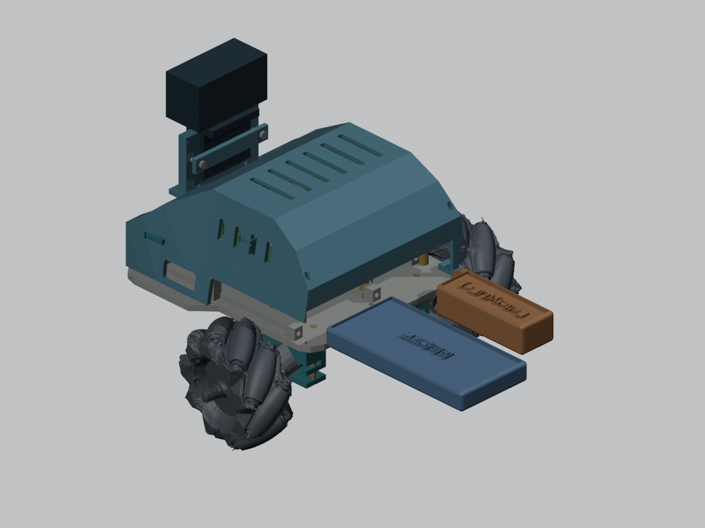
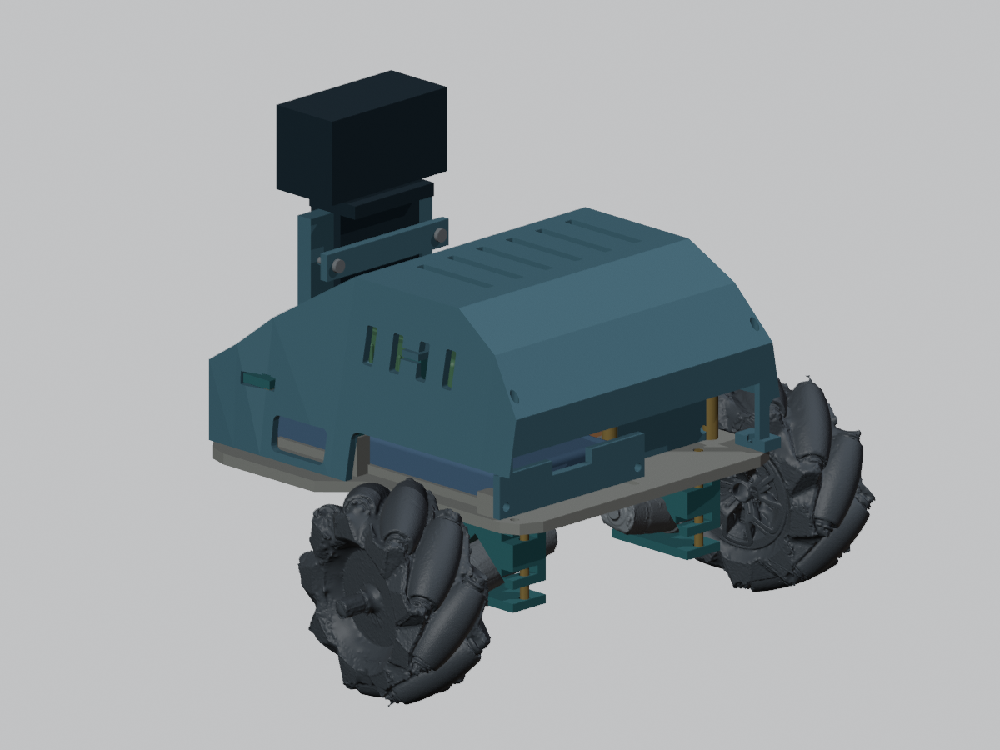

2026-10-29 / A · 기존 v4.1 보존 · 제공 STL 크기·형상 유지

위 이미지는 뒤 잠금판을 제거하고 배터리를 빼낸 설명용 장면입니다. 배터리를 공중에 놓는다는 뜻이 아니며 손으로 받쳐 꺼냅니다. 저장된 Blender 모델은 배터리가 장착된 상태입니다.

변경 출력물5개가 각각 연결체1개인 닫힌 메시임을 확인했습니다. 보조배터리165mm·리포배터리155mm 후방 이동을 포함한 직선 공간과 바닥판·선반·덮개·가로대·지지대 사이의 부피 겹침을 검사했습니다. 케이블·커넥터·손과 공구·실제 휨은 이 검사에 포함하지 않았습니다.
잠금판 상단에 열린 배선 홈을 두어 선이 닫힌 구멍에 갇히지 않도록 했습니다. 홈 절삭 기준은 폭24mm·높이9mm이며 실제 열린 높이는 판 상단과의 교차로 달라집니다. 커넥터 형상이 확인되면 홈과 접근 공간을 대조해야 합니다.
배터리 원본 크기는 유지했습니다. 충전 포트가 어느 면에 있는지 확정하지 못했으므로, 차 안에서 충전한다는 전제로 고정 구멍을 만들지 않았습니다. 리포배터리 보관·충전 시 보관팩을 사용하라는 수업 자료 조건을 유지하며, 실제 충전 방법은 지급 배터리·충전기 안내에 따라 확인해야 합니다.
이 폴더의 STL5개는 바닥판·선반·덮개·뒤 잠금판2개의 변경분입니다. 다른 버전과 임의로 섞어 전체 출력 세트로 취급하지 마세요. 원본 수업 STL은 수정하거나 이 폴더에 출력 대상으로 복사하지 않았습니다.
실제 출력 재료·지지대·층별 경로·고정력·주행 진동은 미검증입니다. battery_service_checks.json에 수치와 검사 범위를 기록했습니다.